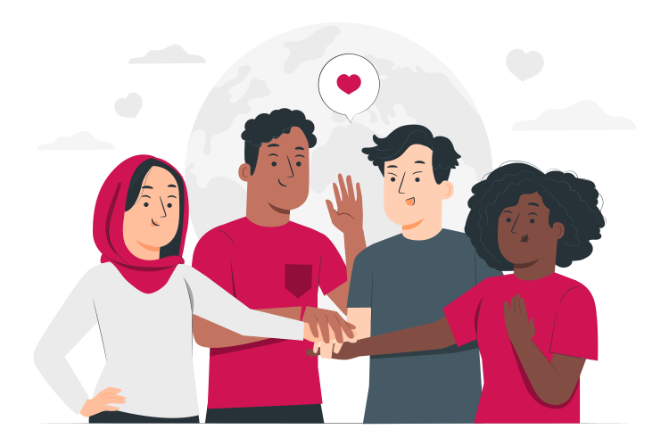

¿Sabias que 2 de cada 5 jovenes prefieren relaciones sentimantales poliamorosas?
Los cambios de la sociedad actual han recibido a nuevas identidad de género que antes eran reprimidas. A su vez, son cada vez más las personas que no se encuentran conformes en las relaciones monógamas tradicionales y buscan relaciones abiertas o con más de una persona a la vez. El poliamor es considerado hoy en día casi una orientación sexual.
Problema
El mercado actual, si bien ha desarrollado formas que permiten conocer personas de manera remota, no se han adaptado a este tipo de relaciones, por lo que los usuarios no encuentran lugar donde sentirse cómodos, representado y capaces conocer gente que viven el amor de la misma manera.
Nuestra propuesta
Brindar un servicio donde los usuarios se sientan cómodamente representados tanto por su identidad de género como por su manera de mantener vínculos sexoafectivos y logren conocer personas de su interés en las mismas condiciones que ellos. En resumen, un espacio de comprensión, que facilite el diálogo en poliamorosos para que logren expresarse sin tapujos.
Objetivos
- Brindar todas las opciones posibles en cuánto a género y sexo a la hora de que el usuario se registre.
- Habilitación de chats grupales a la hora de que varias personas se aprueben.
- Mayor privacidad en las cuentas.
- Verificación de que los usuarios sean personas reales interesadas en el poliamor y las relaciones libres.
- Conciencia de los diferentes tipos de relaciones poliamorosas que existen.